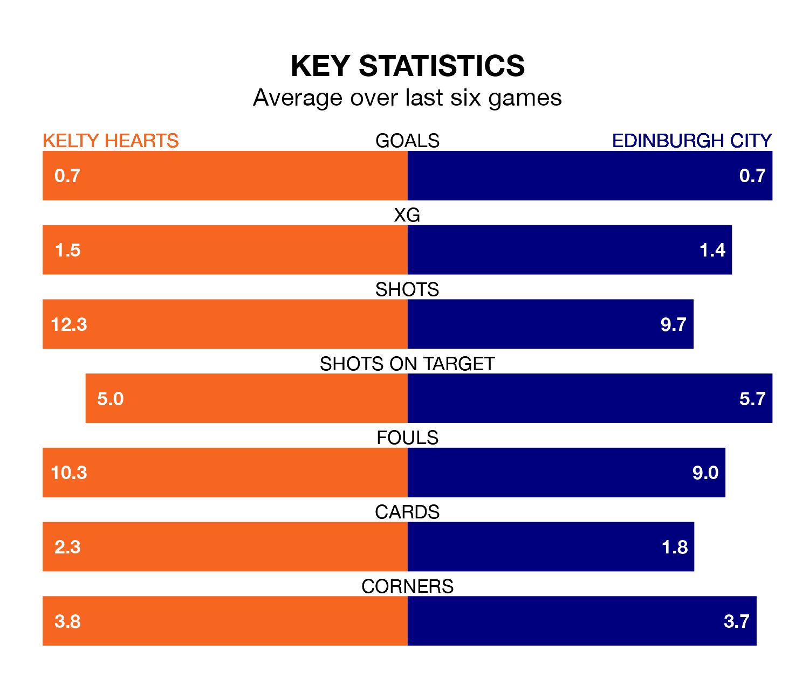

Saturday's match at New Central Park sees two relegation candidates play each other, as seventh-ranked Kelty Hearts host bottom of the table Edinburgh City.
Kelty Hearts have picked up 34 points from their first 34 League One games, with nine wins and seven draws.
That is 23 points more than Edinburgh have collected, having won two and drawn five.
Kelty Hearts are in bad form in League One, with one win and five losses from their last six games.
But with no wins and a draw over that period, Edinburgh's form is even worse – they have taken one point from 18, compared to the hosts' three.
In the last 10 years, Kelty Hearts and Edinburgh have played each other on 12 occasions. Kelty Hearts won six of them, Edinburgh three, and they drew three times.
On average, Kelty Hearts scored 2.1 goals and Edinburgh 1.6 in those matches.
Their last meeting was on February 13, when Kelty Hearts won 3-2 at home.
With 33 goals in 30 games so far this season, City are the league's second-lowest scorers with 1.1 goals per game. And they are conceding more than average, letting in 85 goals at a rate of 2.8 per game.
Kelty Hearts are also below average scorers, with 1.3 goals per game, compared to a league average of 1.6. They have conceded 1.8 goals per game.
Kelty Hearts's last match was on March 23, a 3-2 loss against Annan Athletic, with Craig Johnston and Michael Tidser getting the goals for Kelty Hearts.
Edinburgh lost 4-1 against Falkirk last time out, also on March 23, with Momodou Sambou on the scoresheet.
Updated: 12:39 (UTC), 26/03/24